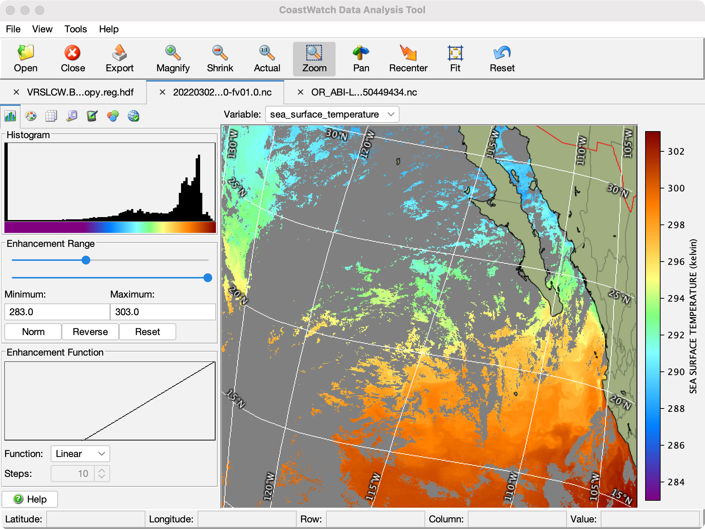

CoastWatch Data Analysis Tool Help: Overview
The CoastWatch Data Analysis Tool (CDAT) is a part of the
CoastWatch Software Library and Utilities package. CDAT allows
you to view satellite data files in CoastWatch HDF (.hdf), NetCDF 3/4 with CF
metadata and other formats, create data plots,
perform data surveys, export data to other formats, and so on. The
following figure shows the main components of the CDAT window:

The components are as follows (starting from the top):
- Menu bar
- Access to file and view operations, tools, preferences, and the help
system.
- Tool bar
- Buttons for common file and view change operations: Zoom, Pan, etc.
- File tabs
- Displays the currently open data file names, and allows you
to select or close (by clicking the x symbol) a specific file.
- Control tabs
- Access to the data view control panels for enhancement,
palette, overlays, surveys, annotations, composite, and
navigation correction.
- Variable selector
- Displays the currently selected variable in the data file.
You can choose a new variable by selecting it from the drop-down list
button.
- Data view controls
- Buttons and adjustments for each control tab.
- Data view
- The main area showing the current earth data file and active variable.
- Track bar
- Tracks mouse movement and shows the pointer location in
latitude/longitude and image row/column coordinates, as well as
the data variable value.
The following help sections contain more details on using
CDAT:
Basic data display
Data analysis
Advanced usage